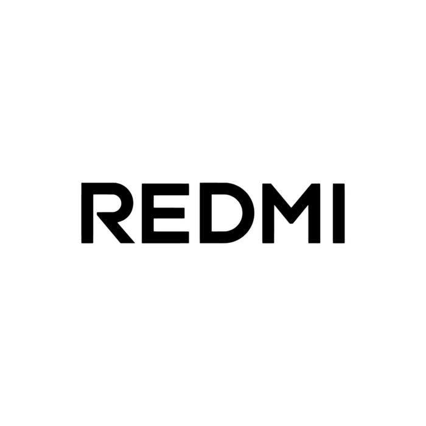
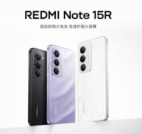
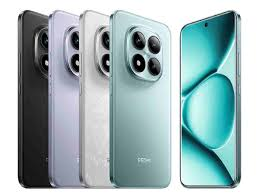

Redmi (stylized in all caps as REDMI) is a subsidiary brand owned by Chinese electronics company Xiaomi.
It was first launched in July 2013 as a budget smartphone line, and became a separate sub-brand of Xiaomi in 2019 to takeover entry-level and mid-range devices originally produced by Xiaomi brand,
while Xiaomi itself produces upper-range and flagship Xiaomi (formerly Mi) phones.
Redmi phones use Xiaomi's MIUI (2014–2023) and Xiaomi HyperOS (2023–present) user interface on top of Android.
Models are divided into the entry-level Redmi, the mid-range Redmi Note, and the high-end Redmi K.
In 2022, an ultra-basic entry-level lineup, Redmi A was introduced, with some models featuring Android Go and lacking MIUI/HyperOS user interface.
The Redmi K is exclusive to China and rebranded as Poco (another Xiaomi subsidiary) for select global markets.
The most significant difference from other Xiaomi smartphones is that Redmi uses less expensive components, allowing lower prices while retaining more advanced specifications.
In August 2014, The Wall Street Journal reported that in the second quarter of the 2014 fiscal year, Xiaomi had a smartphone market share of 14% in China;
Redmi sales were attributed as a contributing factor toward this ranking.
Some devices with identical specification are released in some markets as POCO, in others as Redmi; for example the Poco X7 and Redmi Note 14 Pro 5G.
Redmi Note 14 SE officially arrived in India on 28 July 2025.

The first Redmi phone Redmi (Red Rice in Mandarin), released in China in 2013, was first launched on Xiaomi's website, with consumer sales beginning on 12 July 2013. The phone was internationally released under the Redmi brand in early 2014. On 13 March 2014, Redmi announced that their phones had been sold out in Singapore alone, eight minutes after being made available to buy on Xiaomi's website. Criticism regarding the release of Redmi phones included the notion that the firm may be exaggerating its sales by releasing them in small batches, causing them to quickly sell out. On 4 August, The Wall Street Journal reported that in China's smartphone market, Xiaomi overtook Samsung in the second quarter of the 2014 fiscal year with a 14% market share in smartphone shipment rankings, while Samsung had a 12% market share during this time.[9] Yulong and Lenovo both had a 12% market share during this time. Redmi sales were attributed as contributing to Xiaomi's increased shipment rankings in the smartphone market. Conversely, in the first quarter of 2014, Xiaomi held a 10.7% market share.

In January 2019, Xiaomi officially announced Redmi to be a separate sub-brand, distinct from Xiaomi. On 10 January 2019, Redmi unveiled the Redmi Note 7 and Note 7 Pro, the first phones in the Redmi series with a 48-megapixel rear camera. The Note 7 has a Samsung GM1 image sensor, and the Note 7 Pro has a Sony IMX586 48 MP image sensor. The Note 7 is powered by the Qualcomm Snapdragon 660 Octa-Core Processor clocked at 2.2 GHz, and the Note 7 Pro has an 11 nm Qualcomm Snapdragon 675 Octa-Core Processor clocked at 2.0 GHz. The Note 7 is available with 3 GB RAM with 32 GB storage, 4 GB RAM with 64 GB storage and 6 GB RAM with 64 GB storage. It has a 4,000 mAh battery with Quick Charge 4.0. The Redmi Note 7 series of smartphones is one of the best-selling Redmi phones; over 20 million devices were sold in the 7 months from their introduction. The Redmi K20 and K20 Pro (also marketed as the Mi 9T) are Redmi's first foray into the flagship market. The phone was launched along with the Redmi 7A in China on 28 May. The K20 Pro is powered by the flagship Snapdragon 855 processor while the K20 is powered by the newly released Snapdragon 730 and Redmi 7A is a less expensive phone with Snapdragon 439. Redmi Note 8 and Note 8 Pro were launched on 29 August, and Redmi 8 and 8A were announced in October 2019. After emerging as a sub-brand of Xiaomi, Redmi employed the same Smartphone & AIoT dual core strategy as Xiaomi, and branched out to different product categories such as smart TVs, notebook PCs. Xiaomi also forayed into home appliances such as washing machine, and products such as luggage.